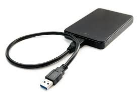

Un disco duro extraíble es una especie de periférico que se conecta a cualquier tipo de ordenador o dispositivo móvil que se tenga, es un elemento adicional de almacenamiento de datos muy útil para poder tener más capacidad al momento de almacenar archivos varios que ofrece al usuario la oportunidad de poder ser llevado a donde sea. Estos suelen usar con frecuencia para poder hacer copias de seguridad al momento de formatear un ordenador. También sirve para tener archivos más pesados que no se quieran añadir al ordenador como películas o incluso música. Ahora que conoces lo que es el disco duro extraíble, te invitamos a que conozcas también algunas de sus características principales. De esta forma podrás entender mejor su funcionamiento y lo que pueden ofrecerte al momento de comprarlo.
 Volver